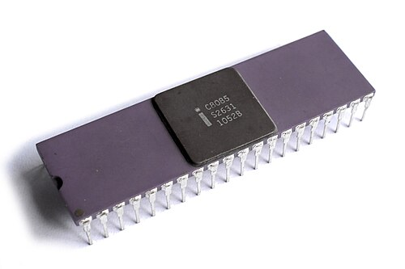
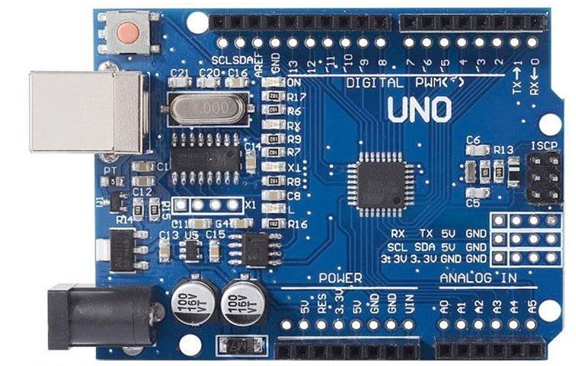
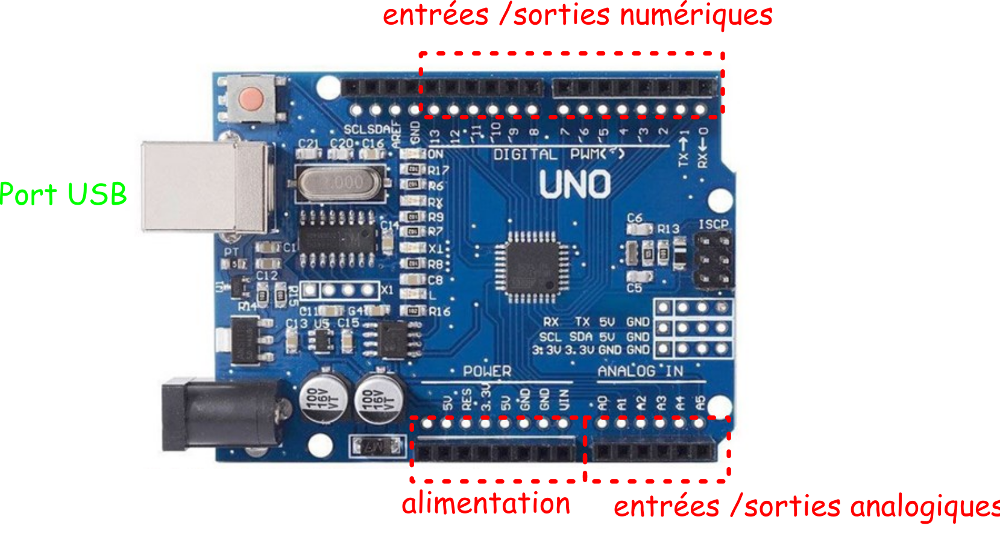
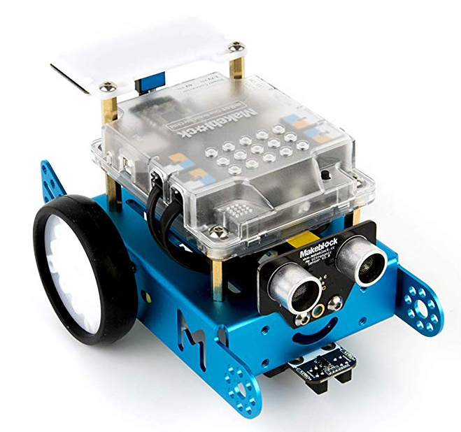
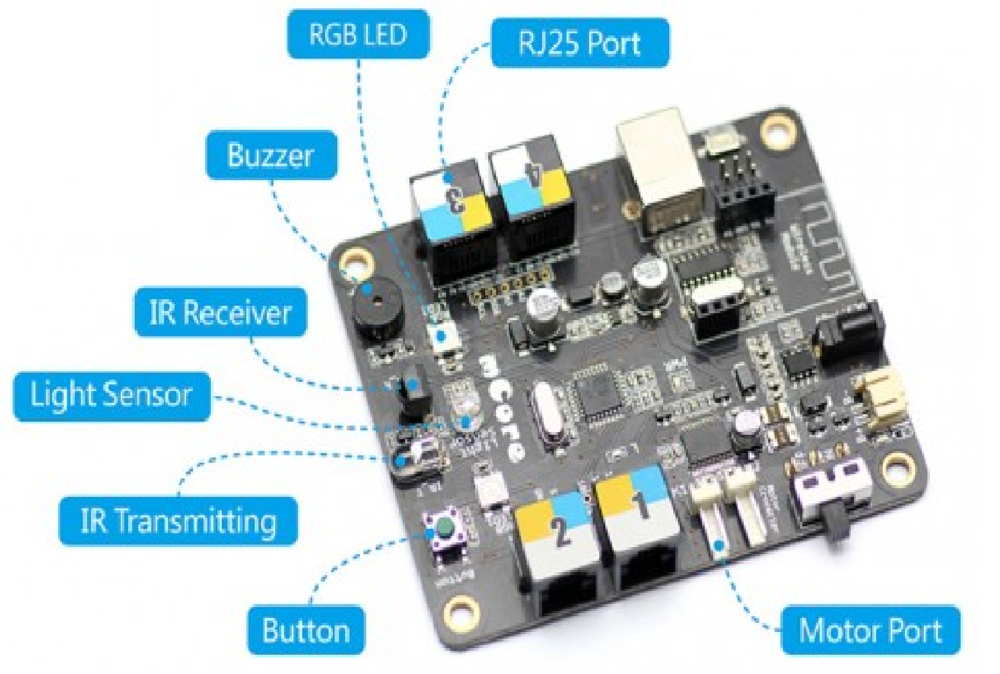
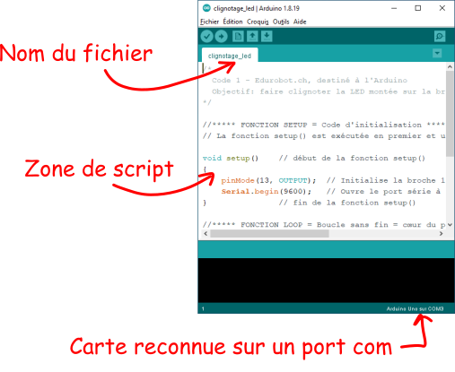
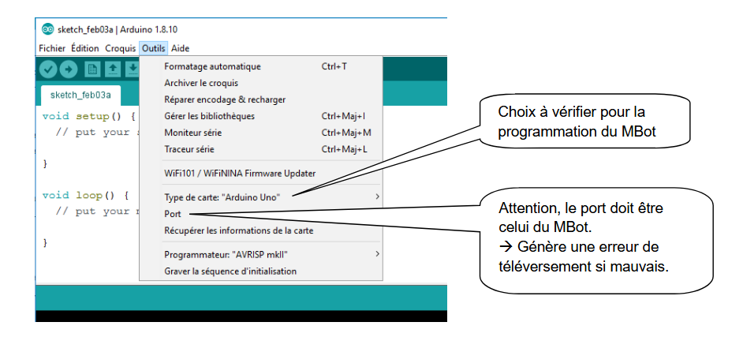
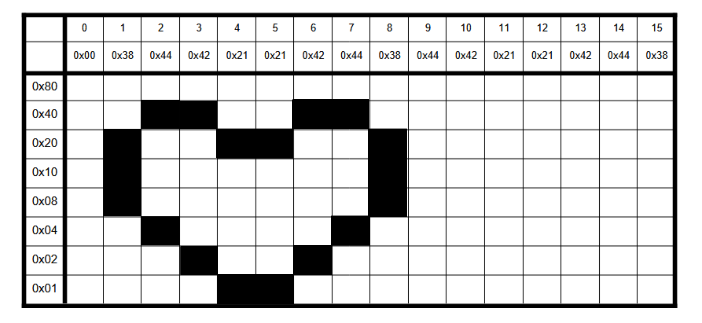
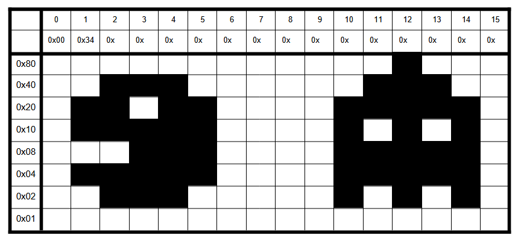

Microcontrôleur¶
Ce que dit Wikipédia
Un microcrontrôleur est un circuit intégré qui rassemble les éléments essentiels d'un ordinateur : processeur, mémoires (morte et mémoire vive), unités périphériques et interfaces d'entrées-sorties.

Par rapport à des systèmes électroniques à base de microprocesseurs, ils permettent de diminuer la taille, la consommation électrique et donc le coût des produits pour des performances satisfaisantes.
Plusieurs types
On retrouve essentiellement, l'ATmega328(carte Arduino), l'ESP32(populaire pour les applications IoT), le PIC16(systèmes embarqués industriels), ...
Un microcrontrôleur ne contient pas de système d'exploitation: il ne peut contenir qu'un seul programme!
Le principe
Les cartes intégrées supportant les contrôleurs, ont des entrées(pour les capteurs) et des sorties(pour les actionneurs).
Par exemple, un programme peut lire sur une entrée, la valeur donnée par un capteur de luminosité et en conséquence peut allumer une led branchée sur une sortie. L'essentiel de nos programmes reposera sur ce concept d'entrée/sortie.
En ce qui nous concerne, nous nous concentrerons d'abord sur l'Arduino.
La gamme Arduino¶
Arduino
Arduino est la marque d'une plateforme de prototypage open-source qui permet aux utilisateurs de créer des objets électroniques interactifs à partir de cartes électroniques matériellement libres sur lesquelles se trouve un microcontrôleur. (source : Wikipédia)
Il existe de nombreuses carte Arduino. Commençons avec la plus commune, la carte Uno.

La carte Uno¶
La carte possède une alimentation, des broches d'entrées et des broches de sorties: c'est minimaliste mais suffisant pour comprendre son fonctionnement.

Digital contre Analogique
Les entrées/sorties (E/S) digitales sont numériques et n'ont donc que deux états(0V ou 5V). Les E/S analogiques proposent des valeurs continues entre 0V et 5V(donc beaucoup plus de possibilités...)
Le Mbot¶
Nous utiliserons une carte embarquée dans un robot: vous remarquerez un cache transparent qui la protège contre des mauvaises manipulations...


La carte possède des ports de communication pour les différents capteurs et actionneurs.
Actionneurs et Capteurs
- un capteur reçoit des informations de l'environnement ambiant et les transmet au microcontroleur: le Light Sensor capte la luminosité ambiante, c'est donc un capteur!
- un actionneur reçoit des informations de la carte et les traduit en action: les moteurs actionnent les roues, ce sont des actionneurs.
Certains éléments sont intégrés à la carte, d'autres doivent être connectés via les différents ports (RJ45 ou motor).
Vous remarquerez aussi la présence d'un port USB qui permet non seulement d'alimenter la carte en 5V mais surtout de téléverser le programme sur la carte!
Téléverser??
Téléverser c'est l'action qui consiste à écrire puis à installer le programme dans le microcontrôleur.
L'environnement Arduino¶
Il faut un environnement de travail pour écrire puis téléverser un programme (l'équivalent de Thonny pour Python...). Nous utiliserons naturellement l'IDE d'Arduino:

Première manipulation¶
C'est parti!
Pour bien commencer
- Tout d'abord brancher votre Mbot sur un port USB de votre ordinateur.
- Lancer l'IDE arduino et vérifier bien qu'il reconnaît la carte. (Menu Outils-> Type de carte et Port)

Premier programme¶
Maintenant que la configuration est bonne, on peut téléverser notre premier programme.
Mon premier programme
- Créer un nouveau fichier que vous nommerez
clignotage_led. - Recopier le code suivant dans la zone d'édition.
- Téléverser dans le robot en vérifiant qu'il soit bien allumé...
Premier programme
#include "MeMCore.h" // c'est toutes les méthodes pour la carte du robot
MeRGBLed ledRGB ; // on instancie l'objet ledRGR qui est un objet de la classe MeRGBLed
//-------------------------------------------------------------------------------
//---- Le setup, n'est exécuté qu'une fois au démarrage du programme
//-------------------------------------------------------------------------------
void setup()
{
Serial.begin(9600); // démmare la communication par la liaison série
ledRGB.setpin(13) ; // fixe la broche qui commande les LEDs
ledRGB.setNumber(2); // Nombre de LEDs sur la carte du robot
ledRGB.setColorAt(0,0,0,0); // La LED n°0 avec aucun couleurs allumées --> donc LED OFF
ledRGB.setColorAt(1,0,0,0); // La LED n°1 avec aucun couleurs allumées --> donc LED OFF
ledRGB.show() ; // Un fois les couleurs fixées, on valide l'affichage
Serial.println("Début du programme") ; // envoie le texte sur la liaison série
}
//-------------------------------------------------------------------------------
//----- programme principal boucle à l'infini...
//-------------------------------------------------------------------------------
void loop()
{
ledRGB.setColorAt(0,0,0,60); // La LED n°0 avec le bleu à 60/255
ledRGB.setColorAt(1,0,0,0); // La LED n°1 OFF
ledRGB.show() ; // Valide l'affichage
Serial.println("bleu") ; // envoi du texte sur la liaison série
delay(200); // petite pause avant étape suivante
ledRGB.setColorAt(0,0,0,0); // La LED n°0 OFF
ledRGB.setColorAt(1,40,40,0); // La LED n°1 avec le rouge à 40/255 et le vert à 40/255 --> jaune
ledRGB.show() ; // Valide l'affichage
Serial.println("Jaune") ; // envoi du texte sur la liaison série
delay(200); // petite pause avant étape suivante
// A la fin du programme on recommence à partir du début du loop
}
Modifier les couleurs
Modifier le programme pour obtenir des couleurs plus funs!
Vous pouvez remarquez les instructions Serial.println qui permettent d'imprimer dans la console. Mais où se trouve t-elle? Il suffit de cliquer sur le bouton en haut à droite (en forme de loupe) de l'IDE. Vérifier bien que la transmission se fait avec la bonne valeur de baud...
Première synthèse¶
Le langage utilisé pour programmer une carte Arduino est le C++ dont la syntaxe diffère de celle du Python.
Toutes les instructions se terminent par un ; et l'indentation n'est ici pas du tout obligatoire.
Toutes les instructions d'une fonction sont regroupées autour d'accolades: si l'indentation n'est pas obligatoire, elle est conseillée pour visualiser les blocs d'instructions.
Il existe deux fonctions de base reconnaissables par le préfixe void:
- la fonction
setup(): c'est une fonction écrite au départ qui définit la configuration de base comme définir les broches d'entrées et de sorties. Elle n'est exécutée qu'une seule fois au début du programme. - la fonction
loop(): c'est une boucle infinie! Toutes les instructions qui s'y trouvent sont répétées sans fin...
void setup() et void loop()
Tous les programmes que vous ferez contiendront ces deux fonctions ainsi que l'import des méthodes de la carte.
Série de programmes d'apprentissage¶
Dans cette section, vous trouverez toute une série de programme à réaliser en utilisant toute sorte de capteur et actionneur...
N'oubliez pas!
À chaque fois vous créerez un nouveau fichier que vous n'oublierez pas d'enregistrer!
Utilisation du bouton¶
Le robot possède un bouton sur sa face avant.
Actionner le bouton
- Copiez le code suivant.
- Actionnez le bouton et lisez les instructions dans la console.
Le bouton
#include "MeMCore.h" // c'est toutes les méthodes pour la carte du robot
Me4Button bouton ; // on instancie l'objet bouton qui est un objet de la classe Me4Button
//-------------------------------------------------------------------------------
//---- Le setup, n'est exécuté qu'une fois au démmarage du programme
//-------------------------------------------------------------------------------
void setup()
{
Serial.begin(9600); // démmare la communication par la liaison série
bouton.setpin(7) ;
Serial.println("Début du programme") ; // envoie le texte sur la liaison série
}
//-------------------------------------------------------------------------------
//----- programme principal boucle à l'infini...
//-------------------------------------------------------------------------------
void loop()
{
if (bouton.pressed() == true)
{
Serial.println("bouton appuyé") ; // envoi du texte sur la liaison série
}
else
{
Serial.println("bouton relaché") ; // envoi du texte sur la liaison série
}
// A la fin du programme on recommence à partir du début du loop
}
Utilisation du buzzer¶
Le robot possède un buzzer pour faire du bruit ou ... de la musique!
Actionner le buzzer
- Copiez le code suivant.
- Actionnez le bouton et écoutez.
Le buzzer
#include "MeMCore.h" // c'est toutes les méthodes pour la carte du robot
Me4Button bouton ; // on instancie l'objet bouton qui est un objet de la classe Me4Button
MeBuzzer buzzer ; // on instancie l'objet buzzer qui est un objet de la classe MeBuzzer
//-------------------------------------------------------------------------------
//---- Le setup, n'est exécuté qu'une fois au démmarage du programme
//-------------------------------------------------------------------------------
void setup()
{
Serial.begin(9600); // démmare la communication par la liaison série
bouton.setpin(7) ;
bouton.setpin(8) ;
Serial.println("Début du programme") ; // envoie le texte sur la liaison série
}
//-------------------------------------------------------------------------------
//----- programme principal boucle à l'infini...
//-------------------------------------------------------------------------------
void loop()
{
if (bouton.pressed() == true)
{
Serial.println("bouton appuyé") ; // envoi du texte sur la liaison série
buzzer.tone(440, 100); // On génére un LA
}
else
{
Serial.println("bouton relaché") ; // envoi du texte sur la liaison série
buzzer.notone(); // buzzer OFF
}
// A la fin du programme on recommence à partir du début du loop
}
Le capteur de luminosité:¶
Le robot possède un capteur pour mesurer la luminosité ambiante.
Utiliser le capteur de luminosité
- Copiez le code suivant.
- Cacher avec votre main le capteur pour voir évoluer la valeur de la mesure.
Le capteur de lumière
#include "MeMCore.h" // c'est toutes les méthodes pour la carte du robot
MeLightSensor capteurLumiere(PORT_6) ; // on instancie l'objet capteurLumiere qui est un objet
// de la classe MeLightSensor
// en le connectant sur le PORT6
// correspond à faire capteurLumiere.setPin(8,A6)
//-------------------------------------------------------------------------------
//---- Le setup, n'est exécuté qu'une fois au démmarage du programme
//-------------------------------------------------------------------------------
void setup()
{
Serial.begin(9600); // démmare la communication par la liaison série
Serial.println("Début du programme") ; // envoie le texte sur la liaison série
}
//-------------------------------------------------------------------------------
//----- programme principal boucle à l'infini...
//-------------------------------------------------------------------------------
void loop()
{
Serial.print("Niveau de lumiere : ") ; // envoi du texte sur la liaison série sans retour ligne (ln)
Serial.println(capteurLumiere.read()) ; // envoi du niveau de lumière sur la liaison série
}
Le capteur de distance:¶
Le robot possède un capteur ultra son pour mesurer la distance à un objet situé devant lui. Il émet un signal par la broche T(transmission) et le reçoit après réflexion sur la broche R.
Utiliser le capteur de distance
- Connectez le capteur de distance au
PORT 1de la carte. - Copiez le code suivant.
- Mettre un obstacle devant le capteur pour voir évoluer la valeur de la mesure.
Le capteur de distance
#include "MeMCore.h" // c'est toutes les méthodes pour la carte du robot
MeUltrasonicSensor capteurDedistance(PORT_1) ; // on instancie l'objet en fonction
// de là où il est connecté
//-------------------------------------------------------------------------------
//---- Le setup, n'est exécuté qu'une fois au démmarage du programme
//-------------------------------------------------------------------------------
void setup()
{
Serial.begin(9600); // démmare la communication par la liaison série
Serial.println("Début du programme") ; // envoie le texte sur la liaison série
}
//-------------------------------------------------------------------------------
//----- programme principal boucle à l'infini...
//-------------------------------------------------------------------------------
void loop()
{
Serial.print("distance en cm : ");
Serial.println(capteurDedistance.distanceCm());
}
Le panneau LED:¶
Le robot possède un panneau LED (rectangle blanc) qui permet d'afficher des messages ou de simples informations graphiques comme des icones.
Utiliser le panneau LED
- Connectez le panneau LED au
PORT 2de la carte. - Copiez le code suivant.
- Obervez le résultat.
Panneau LED
#include "MeMCore.h" // c'est toutes les méthodes pour la carte du robot
MeLEDMatrix Panneau_LED(PORT_2) ; // on instancie l'objet en fonction
// de là où il est connecté
char string_data[]="NSI AGEN 2025-2026 ";
uint8_t Bitmap_Heart[16]={0x00,0x38,0x44,0x42,0x21,0x21,0x42,0x44,0x38,0x44,0x42,0x21,0x21,0x42,0x44,0x38,};
int move_times = sizeof(string_data)*6;
//-------------------------------------------------------------------------------
//---- Le setup, n'est exécuté qu'une fois au démmarage du programme
//-------------------------------------------------------------------------------
void setup()
{
Serial.begin(9600); // démmare la communication par la liaison série
Panneau_LED.clearScreen() ;
Serial.println("Début du programme") ; // envoie le texte sur la liaison série
}
//-------------------------------------------------------------------------------
//----- programme principal boucle à l'infini...
//-------------------------------------------------------------------------------
void loop()
{
//---------------------------------------------------------
//----- affichage d'un nombre
Panneau_LED.clearScreen() ;
Panneau_LED.setBrightness(5);
Panneau_LED.showNum(1.32,5) ;
delay(500) ;
//---------------------------------------------------------
//----- affichage d'un texte défilant
Panneau_LED.clearScreen() ;
for(int16_t i=0; i<move_times; i++)
{
if(i > move_times) {i=0; }
Panneau_LED.drawStr(15-i,7,string_data);
delay(25);
}
delay(500) ;
//---------------------------------------------------------
//----- affichage d'une image et variation de la luminosité
Panneau_LED.clearScreen() ;
Panneau_LED.drawBitmap(0, 0, sizeof(Bitmap_Heart), Bitmap_Heart);
for(uint8_t k=0; k<3; k++)
{
for(uint8_t i=0;i<8;i++)
{
Panneau_LED.setBrightness(i);
delay(100);
}
for(uint8_t i=7;i>0;i--)
{
Panneau_LED.setBrightness(i);
delay(100);
}
}
delay(500) ;
}
On a la ligne suivante qui permet de définir deux coeurs:
uint8_t Bitmap_Heart[16]={0x00,0x38,0x44,0x42,0x21,0x21,0x42,0x44,0x38,0x44,0x42,0x21,0x21,0x42,0x44,0x38,};
Rappelez-vous du cours sur l'architecture: vous indiquez au microcontroleur ce qu'il doit écrire dans les 16 colonnes du panneau LED. L'image suivante est assez claire:

Monstres et compagnie
En s'aidant du tableau suivant, modifier le code précédent pour afficher seulement nos deux petits monstres.

Série de programmes de synthèse¶
Défi n°1:¶
Affichage dynamique
Faites afficher la valeur donnée par le capteur de distance sur le panneau Led.
Défi n°2:¶
Radar
Faites sonner le buzzer dès qu'un objet est à moins de 10 cm de l'avant du Mbot (on utilisera le capteur de distance)
Défi n°3:¶
En musique
Faites jouer de la musique à votre mbot.
Un autre travail viendra avec l'introduction de l'Infra Rouge pour communiquer avec la télécommande et l'action de moteurs. Patience!!